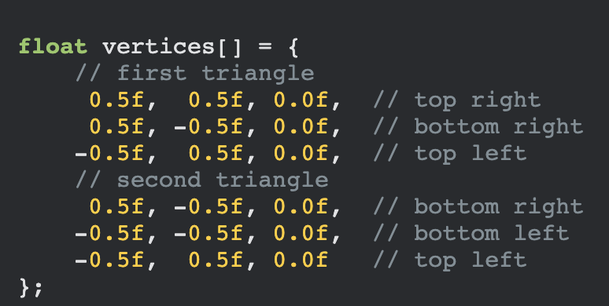
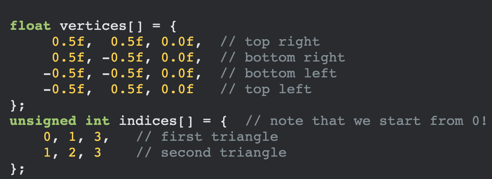
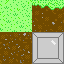
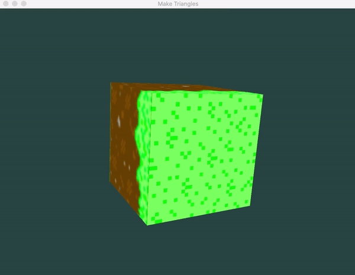
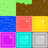
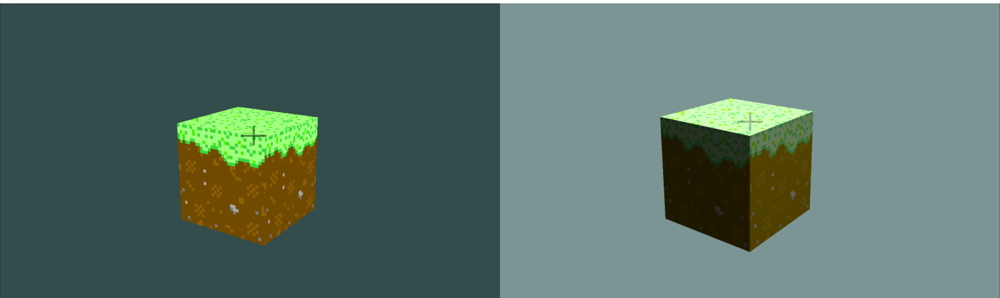
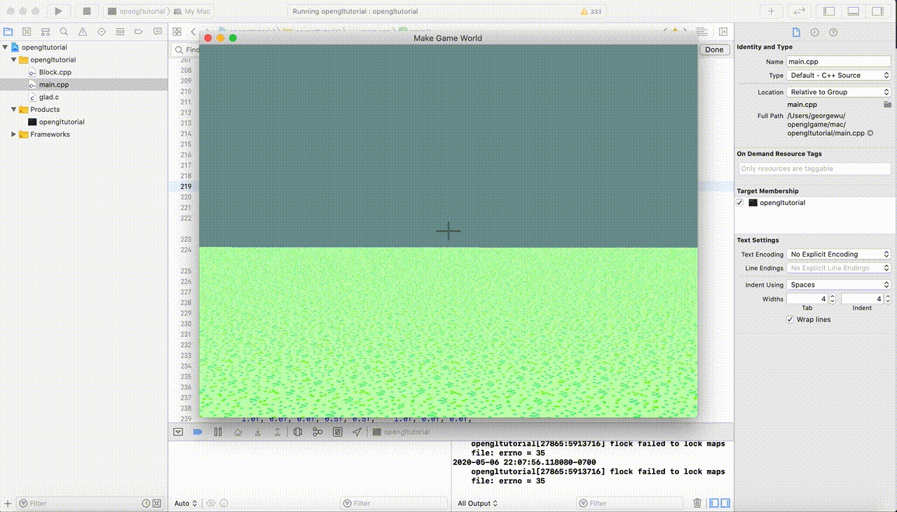

Cube Constructor
Team members:
Grant Shimada 3031995253, George Wu 3032379223, Henry Zhang 3031862185
Abstract:
Cube Constructor is our attempt at creating a Minecraft-like game in C++ using OpenGL. In our game, we should be able to render an open-world space made up of different types of textured blocks. The player should be able to move around this space, and also manipulate blocks by destroying or placing them. Our main technical challenge was learning how to create a 3D game engine from scratch using OpenGL; learnopengl.com was a great resource in doing this. We also tackled problems regarding texture mapping, lighting, and game physics (block collision, jumping, gravity). We also strived to be able to render our game efficiently, using various techniques to speed up our rendering process.
Technical Approach:
VBOs, VAOs, & EBOs
Vertex Buffer Objects (VBO):
We use VBOs to store vertices that we want to render into our GPU's memory for processing by the vertex shader. This is helpful, because sending data to the GPU is pretty slow, so the VBO helps us send large batches of data at a time.
Once passed into the GPU's memory, we also have to use the function glVertexAttributePointer() in order to tell the vertex shader how to interpret the data. For example, if our vertices are made up of (x, y, z) coordinates. However, this action must be repeated every time we draw an object. When you end up having to render many triangles into a scene, this quickly becomes cumbersome. This leads us into the next type of buffer we will look at.
Vertex Array Objects (VAO):
VAOs are bound similarly to VBOs, and are used to store info from vertex attribute calls. This means that whenever we want to make a vertex attribute call, we only have to do it once, and then we can simply bind a VAO for subsequent uses. This simplifies the process greatly, so that whenever we want to switch to a different configuration, we simply have to use a different VAO.
Element Buffer Objects (EBO):
EBOs are used to more efficiently make use of vertices. Without using an EBO, we would have to use 6 vertices to define a rectangle (3 for each of the 2 triangles that make up the rectangle). EBOs allow us to pick specific vertices to use when drawing, so we can render a rectangle using only 4 vertices (by reusing 2 of them). This means that we also have to specify a separate array of indices to use in our EBO.


Images of code from learnopengl.com
Textures
Creating and Binding a Texture:
We use an image loading library called stb_image.h by Sean Barret to load our texture files. To use it, we must first bind a texture so that future texture functions will operate on our desired texture. Then, we generate the texture using the data we loaded from our texture image. However, as our rendered grass blocks have different textures for each face, we end up having to re-bind a new texture every time we want to render a new face. As each block has 6 faces, and we want to be able to render a large number of blocks, this quickly becomes a problem.
Texture Atlas:
Through the use of a texture atlas, we can avoid re-binding a texture every time we have to render a new object, making our code much more efficient. Previously, we would have to bind a new texture every time we draw a new face of a cube, as the top, sides, and bottom of the grass cube look different. However, with a texture atlas, we can bind the texture once, and use our texture coordinates to pick different parts of the texture corresponding to each face of the cube.

The texture atlas we sampled from to create our grass block. The bottom right gray block is only included because we found it easier to use a square image.
The Block Class
Placing and Removing Blocks
The Camera, and Movement
Shaders
Vertex and Fragment Shaders:
Just as we did during the course, we write our shaders in GLSL. For our purposes, our shaders must take in information about the player's position, the light's position, the texture, and be able to transform our objects into the 3D world space. We use a separate set of shaders to create our crosshair, which is a 2D cross that always rests in the middle of the screen independent of movement.
Lighting:
To give our world some lighting, we implemented Blinn-Phong shading. As we learned, this is a combination of ambient, diffuse, and specular lighting. In addition to this, we also implement gamma correction, which is supposed to give the lighting of our world a more realistic look. The use of gamma correction comes from the non-linear lighting scale that monitors use in order to display colors, which are supposed to look more pleasing to the human eye. However, this non-linear scale messes up physical light calculations, so we use gamma correction to correct this. In our case, it also gives our world a more pastel look, which can be seen in the results section.
Problems Encountered
Setting up OpenGL was an area that gave us a lot of issues. As we needed to use many different libraries (including GLFW<, GLAD, stb_image, etc.), we ended up spending a lot of time trying to get everything working.
Another area that caused a lot of difficulty was figuring out how to use multiple textures in our scene. Initially, it was difficult just figuring out how to use different textures on different sides of the cube. However, even after figuring that out, we had to figure out how to bind textures more efficiently so that our game world didn't run too slowly. This is when we figured out to use the texture atlas.
We also had difficulty structuring our Block class. As we needed it to handle block collision, as well as for us to be able to remove and place blocks at will, we spent a lot of time thinking on how to best structure the class. We also wanted to build the class so that we could render large numbers of blocks in a simple and clean way.
Lessons Learned
Working on this project was a very fun and rewarding experience for all of us. Building a 3D game engine like this completely for scratch required a lot of work and understanding of OpenGL, and we were happy to have the chance to do so.
Results Showcase:
Textured Grass Cube

One of the first steps of our project: rendering a 3D cube with different textures on its different faces. This gif was made early on in our project, when we were still using bilinear texture filtering instead of nearest neighbor. This is why the surface of this cube seems blurrier than the ones after.
Multiple Grass Cubes
This was made after we figured out how to render multiple blocks into a scene. At this time, we actually had a bug where we were rendering twice the amount of blocks we wanted to, so that all of them except for the corner blocks were overlapping. This causes the flickering that you see in this video.
Textures

This shows all the different types of blocks we initially made for the project.
Lighting

This is a before and after comparison of the effect of shading on our grass block.
This shows our shaded plane.
Movement


Jumping (left) and Falling off the game world (right)
References:
- Our biggest resource by far: learnopengl.com
- The setup tutorial on learnopengl.com doesn't cover the Mac setup process, especially in regards on how to properly link GLFW. Because I (George) have a mac, I had to consult many additional sources when setting up OpenGL. While following other online tutorials also didn't work for me, they did give me a better idea of what I needed to do, and also how to properly navigate Xcode. After I asked 184 TA Seth Lu for help, he was able to help me figure out my problems (thank you!). The below references are some of the more helpful ones I found online. All the OpenGL, GLFW, and GLAD library files I still obtained by following the steps indicated on learnopengl.com.
- Easy to follow steps.
- A more visual explanation with most of the same steps.
- For me, what worked was to:
- 1. Configure the "Header Search Paths" in "Build Settings" with the correct include directory.
- 2. Configure the "Library Search Paths" in "Build Settings" with the correct path to a directory including all the glfw library files.
- 3. In "Build Phases" > "Link Binary with Libraries": Link ONLY "OpenGL.framework", "Cocoa.framework", "IOKit.framework", and "libglfw.a".
- Image Loading Library: stb_image.h
- Texture Atlas idea
- Finding a Voxel along a ray
Individual Contributions:
We all worked on the project proposal, the milestone report, and the final presentation together. We also all worked through the setup and the basics of OpenGL together. Overall, the work was split pretty evenly throughout the project.
- Grant Shimada: Came up with project idea. Made milestone website. Made final video.
- George Wu: Created 3D game world made up of blocks. Implemented texture binding. Made crosshair. Implemented shading and gamma correction. Made final website.
- Henry Zhang: Drew block assets. Implemented camera movement and keyboard controls. Made Block class. Implemented block collision and gravity. Implemented block placement and destruction.